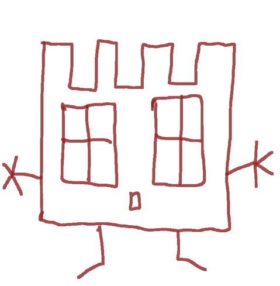

ez félig az aminek látszik, de amúgy egy olyan oldal, ahol minden az étel-ennivaló-élelem-eledel-eleség-étek-táplálék-harapnivaló-kaja-élelmiszer-koszt-elemózsia-tápanyag-betevő-manna-fogamravaló-falnivaló körül forog és bemutatásra kerül mennyire nagyon benne van folyamatosan az agyamban az, hogy mikor mit fogok enni és mit kell vennem hozzá, amit majd mikor főzök meg és mennyit kell abból magammal vinnem, hogy ne keljen sok millió magyar forintot költeném.
